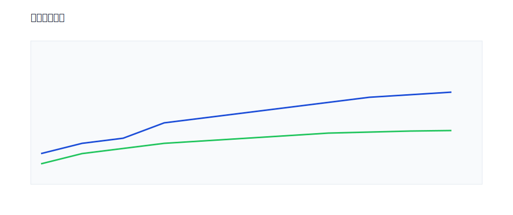

产品性能评估
以稳定性、吞吐能力与延迟为核心维度，对不同环境进行对比测试。

一、测试摘要
| 环境 | P95 延迟 | 吞吐 |
|---|---|---|
| 本地 | 112 ms | 2.1k RPS |
| 测试 | 98 ms | 2.6k RPS |
| 生产 | 87 ms | 3.0k RPS |
二、稳定性分析
故障率较低，重试机制改善了瞬时超时问题。
三、瓶颈定位
- 数据库连接池耗尽
- 队列消费速率受限
- 单点缓存热点 Key
四、优化策略
| 策略 | 预期收益 | 风险 |
|---|---|---|
| 读写分离 | 吞吐+20% | 一致性复杂度上升 |
| 批量处理 | CPU 利用率+15% | 延迟尾部风险 |
| 缓存多级化 | 命中率+12% | 失效策略复杂 |
五、容量规划
基于峰值×安全冗余 1.5 倍配置，支持大促与突发流量。
六、发布与回滚
支持金丝雀、蓝绿部署，并提供自动化回滚剧本。
七、监控与告警
全链路埋点覆盖核心路径，异常监控与阈值告警到位。
八、结论
建议按“瓶颈定位→优化策略→灰度放量”的节奏推进本期性能优化。